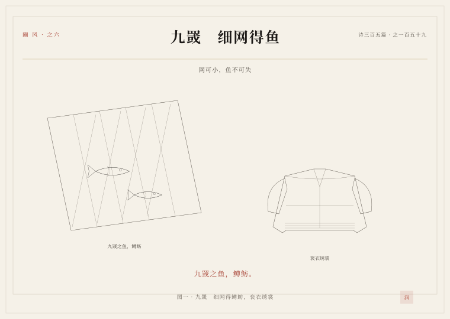
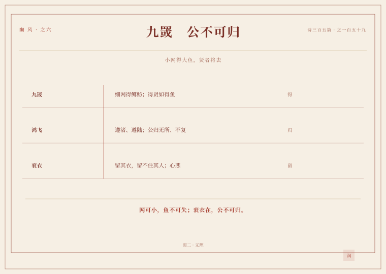

第一百五十九篇 九罭
豳风 · 之六 SJ159
朗读 · 普通话
依经文原文朗读，章次不读出；配古琴底乐，不改速、不加拖腔。全库同一音色（豆包 TTS），非播音员录制。
一 解题
诗三判：
- 谁在说：周大夫。周公东征将归，大夫留之；以九罭得鱼、鸿飞遵渚起兴，末章直呼「无以我公归兮」。
- 说什么事：一章以细网得大鱼，喻得周公；二、三章以鸿飞遵渚、遵陆，喻公归无所、不复；四章以衮衣留公，不忍其归。网愈小，鱼愈大；公愈贤，留愈难。
- 为何编在此：豳风第六篇。前篇言礼则，此篇言留贤；礼已知，贤将去。
《毛序》：「《九罭》，美周公也。周大夫刺朝廷之不知也。」
朱子《诗集传》：「兴也。九罭，网之小者；鳟鲂，大鱼也。衮衣，上公之服。鸿，大雁。遵，循。渚，水中小洲。信，信宿也。」
本库的看法：《九罭》是一首把「留贤」写成「网鱼」的诗。
毛序说「美周公」，朱子说「兴」，二说一美一喻，其实同指：小网能得大鱼，是意外之得；贤者将归，是意外之失。
须辨：九罭是细网，不是九张网；鳟鲂是两种大鱼，不是鱼名泛称；衮衣是上公之服，不是龙袍泛称；鸿是大雁，不是鸿鹄之志；遵是循，不是遵命；信处、信宿是再宿，不是信实。诗不写朝廷之失，只写留公之切。
断语：网可小，鱼不可失；衮衣在，公不可归。
先辨五事：「九罭」是细网；「鳟鲂」是两种大鱼；「衮衣」是上公之服；「鸿」是大雁；「信宿」是再宿。
二 经文
第一章
九罭之鱼，鳟鲂。
我觏之子，衮衣绣裳。
第二章
鸿飞遵渚，公归无所，于女信处！
第三章
鸿飞遵陆，公归不复，于女信宿。
第四章
是以有衮衣兮，无以我公归兮，无使我心悲兮！
三 韵读
- 一章：鱼、鲂、子、裳，鱼、阳相叶。声开而美。
- 二章：渚、所、处，鱼部相叶。声留。
- 三章：陆、复、宿，觉、屋相叶。声促，留更急。
- 四章：衣、归、悲，微部相叶。声长而悲。
读法：一章美，二章留，三章急，四章悲；一章一转，留愈切。
四 字义与名物
- 九罭：网之小者。鳟鲂：两种大鱼。觏：见。之子：此人，指周公。衮衣：上公之服。绣裳：绣纹下裳。
- 鸿：大雁。遵：循。渚：水中小洲。公：周公。无所：无定所。于女：于此。信处：再宿。
- 陆：高地。不复：不再回。信宿：再宿。
- 是以：因此。有衮衣：留其衮衣。无以：不要。我公：我们的周公。悲：悲。
五 今译
一章：九罭所网之鱼，是鳟与鲂。我见到此人，衮衣绣裳。
二章：鸿飞循着水洲，公归没有定所，在此再住一晚吧！
三章：鸿飞循着高地，公归不再回，在此再宿一晚吧！
四章：因此留下这衮衣啊，不要让我的公归去啊，不要让我心里悲啊！
六 章旨
- 一章：细网得大鱼，是「得贤」；衮衣绣裳，是「见其服」；服愈尊，得愈难。
- 二章：鸿遵渚，是「有归路」；公归无所，是「无归处」；信处，是「且留一宿」。
- 三章：鸿遵陆，是「归路渐高」；公归不复，是「不再来」；信宿，是「再留一宿」。
- 四章：留衮衣，是「留其服」；无以归，是「留其人」；心悲，是「留不住」。
七 诗教
- 得贤如得鱼：细网得大鱼，是意外；贤者在侧，不可视为当然。
- 留贤如留鸿：鸿有渚陆，终将飞去；留其衣，留不住其归。
- 悲在「无以」：无以我公归，是明知留不住而仍留；诗之切，在此三字。
八 分寸与边界
- 不把「九罭」读成九张网：九罭是细网；读成九张，则「得大鱼」之喻失。
- 不把「衮衣」读成龙袍：衮衣是上公之服；读成龙袍，则周公之礼失。
- 不把「鸿」读成鸿鹄之志：鸿是大雁；读成志向，则兴义失。
- 不把「信宿」读成信实：信宿是再宿；读成信实，则留公之义失。
九 存疑
- 诗旨：毛序「美周公、刺朝廷」，朱子「兴」。本库从毛朱，以留贤为骨。
- 「九罭」：毛传「网之小者」。从毛传。
- 「公归无所」：一说公归无定所，一说公归而无处可留。从无定所。
- 「是以有衮衣」：一说留衮衣为信，一说以衮衣为荣。从留衣为信。
十 跨典
- 《诗经·召南·甘棠》留召伯之树；此篇留周公之衣，一留树，一留衣。
- 《论语》「微管仲，吾其被发左衽矣」；此篇留周公，正是留周礼。
- 《楚辞·九歌》「留灵修兮憺忘归」；此篇「无以我公归」，同一留人之切。
十一 双卡与图
六对：
| 九罭（细网） |
九罭（九张网） |
| 鳟鲂（两种大鱼） |
鳟鲂（泛称鱼） |
| 衮衣（上公之服） |
衮衣（龙袍） |
| 鸿（大雁） |
鸿（鸿鹄之志） |
| 信宿（再宿） |
信宿（信实） |
| 无以我公归（留公） |
无以我公归（无衣可归） |

图一 · 九罭 细网得鱼，衮衣绣裳

图二 · 九罭 鸿飞遵渚，公不可归